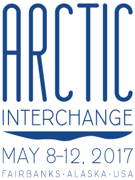

Thanks for attending Week of the Arctic, May 8-14, 2017!
Fairbanks and Anchorage celebrated the Arctic and a successful two-year U.S. Chairmanship of the Arctic Council, now headed by Finland until 2019.
The U.S. Chairmanship was an exciting time for Alaska to be at the forefront of American foreign policy. Especially important during this time was sharing the reality of lives and livelihoods in Alaska with visiting international delegations and a broader domestic audience.
Week of the Arctic 2017 educated and engaged Alaskans, and communicated to those outside Alaska the stories of those who live here.
- Download conference program (PDF)
- Week of the Arctic on Facebook
Arctic Interchange - Fairbanks
Highlighted Alaska's outstanding university research, indigenous leadership, active economic development and innovative policy. Events also emphasized Alaskan expertise in climate science, cold climate design, remote health and energy delivery, engineering and construction, and oceans & fisheries management.
Arctic Interchange highlights
- I AM INUIT Art Exhibit (on view through Sept. 2017 in Anchorage)
- Lessons from Norway: Developing an Economy in the Far North—Visitors shared Norwegian best practices and opportunities for developing a dynamic economy in the Far North, focusing on possibilities for Interior Alaska.
- Arctic 2030: Challenges Facing Arctic Maritime Operators—Identified gaps and shortfalls that can orient the U.S. Department of Homeland Security, U.S. Coast Guard and others to help inform strategy, policy and research.
- Arctic Broadband Forum — Educators, researchers and industry representatives discussed challenges, successes and potential of telecommunications and broadband deployment in the Arctic.
- We Breathe Again documentary film screening — In a landscape as dramatic as its stories, this film intimately explores the lives of four Alaska Native people, each confronting the impacts of intergenerational trauma and suicide.
North by North - Anchorage
An introduction to and reclaiming of Arctic innovation, resilience and sustainability. Events celebrated Alaska's Arctic, shared that Arctic with community members, and attracted visitors from other Arctic states to learn, exchange and build. Visit the North by North website
North by North highlights
- Innovate Arctic—Perspectives on a shared vision of Alaska as a thriving innovation and entrepreneurial hub.
- Circumpolar Arctic Film Festival
- Local & Northern Foods: Northern Inspired, Globally Edible—Food trucks representing Arctic nations Canada, Finland, Greenland, Iceland, Norway, Russia, Sweden and the U.S., plus street food from local and international chefs.
- See a summary of North by North events (PDF)
Archived video presentations
- AIEA Thematic Forum: The U.S. as an Arctic Nation—The goal of this event was to establish awareness and generate interest in the Arctic and Arctic issues among international educators and university leaders.
- Arctic Broadband Forum — presentations and recordings
- Arctic Council Showcase— Speakers presented projects delivered during the U.S. Chairmanship. Alaska leaders interpreted implications for the state.
- Arctic Highlights Forum—Speakers presented updates on Arctic Council-related activities that had occurred during the U.S. Chairmanship.
- International Arctic Assembly—This day focused on Alaska’s unique role in informing and influencing Arctic policy. Also featured were indigenous leadership and culture, scientific research and socio-economic development.
Media coverage
- After Alaska meeting, Arctic mayors pledge more work on shared goals (May 24, 2017, Nunatsiaq Online, Canada) See story
- Op-Ed: Historic Arctic Mayoral Declaration (May 23, 2017, High North News, Norway) See story
- Arctic Mayors group convenes first meeting, issues ‘pan-Arctic cooperation’ declaration (May 19, 2017, KUAC) See story
- Norwegians and Icelanders let Alaskans in on the secrets to economic prosperity (May 15, 2017, Alaska Dispatch News) See story
- Arctic Mayors gather to discuss common challenges of living in the Far North (May 14, 2017, Route Fifty, USA) See story
- Economists urge universities, private sector to collaborate (May 10, 2017, Fairbanks Daily News-Miner) See story
Scenes from Week of the Arctic
Photographers captured many great moments throughout the week. Some highlights are below; these are free to download. More images are available for purchase here.